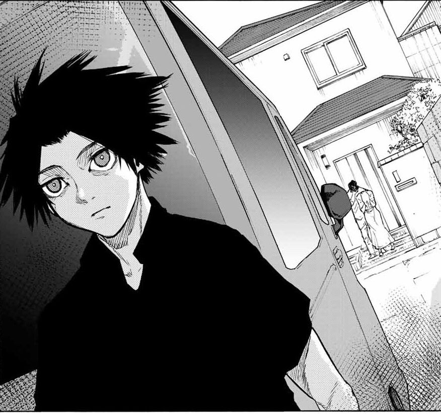

Voici Uruma Shun, un adolescent de 17 ans au début de l'œuvre "Cross of the Cross" "Juujika no Rokunin" en japonais.
Résumé de l'histoire Au fil de l'histoire, Shun doit naviguer à travers des choix difficiles, établir des alliances et combattre des ennemis redoutables. Son propre pouvoir, à la fois un don et une malédiction, l'amène à réfléchir sur sa véritable identité et les thèmes de la loyauté et de la trahison. L'intrigue, riche en action et en suspense, est également marquée par des rebondissements émotionnels qui mettent en lumière les luttes internes de Shun, le rendant particulièrement attachant et complexe. Les relations entre les personnages ajoutent une profondeur à l’histoire, explorant les conséquences de leurs choix dans un monde brutal et impitoyable.
